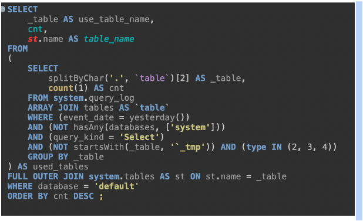
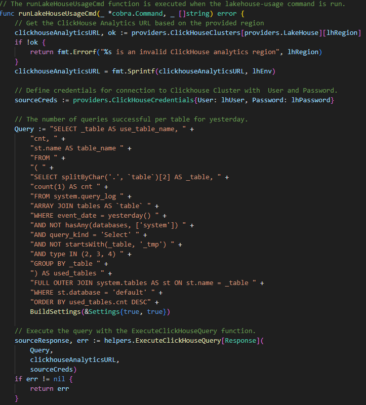

Période : Du 13 mai au 28 juin 2024
Entreprise : Contentsquare
Technologies utilisées : SQL, ClickHouse, Golang
Travail : Stage en tant que **Data Engineer**
Introduction : Ce stage chez **Contentsquare** s'est déroulé sur une période de sept semaines, durant lesquelles j'ai travaillé sur l'optimisation de bases de données et l'analyse des requêtes SQL.
Contexte : Contentsquare utilise plusieurs clusters ClickHouse (une base de données analytique en colonnes) pour stocker et analyser de grandes quantités de données. Cependant, l'équipe manquait d'une vue claire et consolidée sur l'utilisation quotidienne des tables de la base de données, ce qui compliquait la gestion en cas d’incidents.
Objectif : Répondre aux besoins de l'équipe en développant un outil permettant de :
Missions effectuées :
Illustration de la requête SQL développée :
Illustration de l'implémentation en Golang :
Ce stage chez Contentsquare a été une expérience enrichissante et m’a permis de me plonger dans le domaine du Data Engineering. Travailler avec des technologies comme SQL, ClickHouse et Golang m’a aidé à renforcer mes compétences en gestion de bases de données..
Ce que j’ai appris :
Mon ressenti sur le stage :
Ce stage a été très formateur. Il m’a permis de découvrir le travail en entreprise dans un environnement agile et innovant. J’ai appris à être autonome tout en travaillant en équipe et à proposer des solutions adaptées aux besoins concrets d’une entreprise.
Je ressors de cette expérience avec une meilleure compréhension du Data Engineering, une plus grande maîtrise des outils analytiques, et surtout une envie encore plus forte d’évoluer dans le domaine du développement et de l’analyse de données.